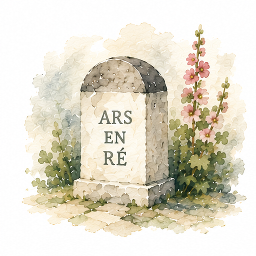
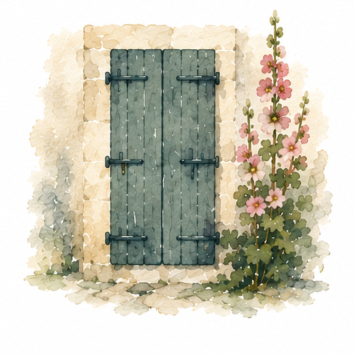
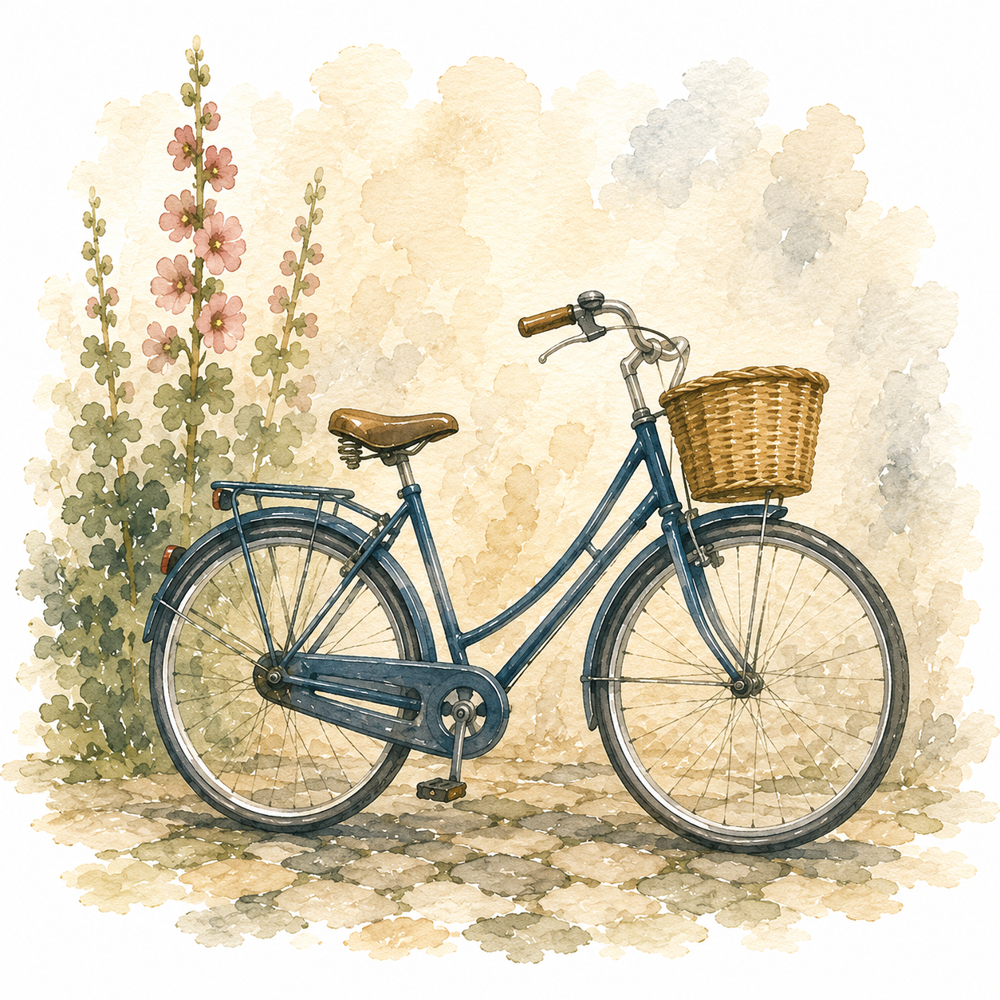

livret d'accueil
Les informations utiles pour arriver, ouvrir, utiliser et fermer la maison à Ars-en-Ré.
rubriques

Parking, venelle, bus et accès piéton jusqu'à la maison.
Les premières étapes à l'arrivée.

La check-list de départ avant de quitter les lieux.

Les informations pratiques pour le séjour.